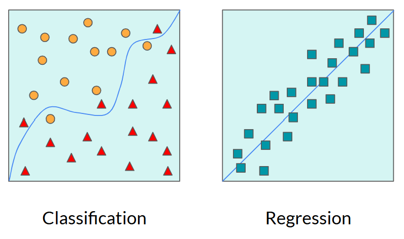
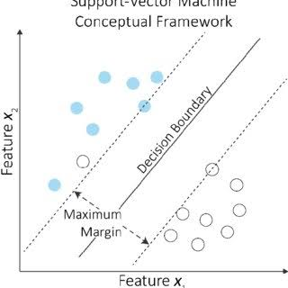
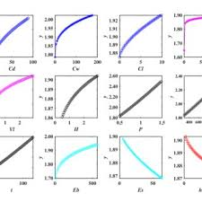

Classification and regression are two major types of machine learning tasks. Both use data to learn patterns and make predictions, but they predict different things. Classification predicts a category, such as whether an email is spam, while regression predicts a numerical value, such as the price of a house.
Both tasks are commonly part of supervised learning, where a model learns from examples that include the correct answers. Understanding the difference between them helps determine which model is appropriate for a particular problem.

In supervised learning, a model trains on labeled data, meaning each example includes the expected answer. For example, a dataset of house features might include each house's actual price. Classification and regression are both supervised learning tasks: classification learns to predict labels, while regression learns to predict numerical values.
Unsupervised learning works with data that has no provided target labels. Instead of predicting known answers, a model looks for patterns or groups within the data. For example, clustering can group customers with similar shopping habits. Although classification and regression usually rely on supervised learning, unsupervised methods can help organize data before a model is trained.
Classification assigns an input to one or more categories. Examples include identifying whether an image contains a cat or a dog, detecting spam emails, and predicting whether a transaction may be fraudulent. A model learns from labeled examples and uses the patterns it discovers to classify new data.
Many classification models separate categories using a decision boundary. In a simple example with two features, this boundary might be a line dividing two groups of data points. More complex models can create curved or irregular boundaries, still in 2D space. Even more complex models, such as support vector machines (SVMs), find a boundary that separates classes while aiming to maximize the margin between them in higher-dimensional space. Decision trees and neural networks are other common classification methods.
Some classification models also output probabilities for each class. A model might estimate an 85% probability that an email is spam, then use a chosen threshold to make its final decision. The threshold can be adjusted depending on the cost of false positives and false negatives. Depending on the use case, false positive may be more costly than false negatives, or vice versa.

Regression predicts a numerical value based on patterns in data. It can be used to estimate house prices, forecast sales, predict temperatures, or study how one variable changes with another. Unlike classification, regression produces a number rather than choosing a category.
Linear regression models the relationship between variables using a straight line, often written as y = mx + b. The model learns a slope and intercept that help it fit the data. When several input variables are used, multiple linear regression combines them to estimate the target value.
Not every relationship follows a straight line. Polynomial regression adds powers of the input variable, such as x², to model curved relationships. Other approaches include decision-tree regression and neural network regression, which can learn more complex patterns.
Logistic regression is an important exception to the naming: despite having "regression" in its name, it is commonly used for classification. It estimates the probability of an outcome, such as whether a customer will cancel a subscription, and that probability can be used to choose a class.

A model's performance should be tested on data it did not train on. For classification, common evaluation measures include accuracy, precision, recall, and the F1 score. These help show how often a model is correct and what kinds of mistakes it makes.
Regression models are often evaluated using mean absolute error (MAE) or mean squared error (MSE), which measure the difference between predicted and actual values. Lower errors generally indicate better predictions on the evaluated data. However, a model can overfit by learning the training examples too closely, so testing on unseen data is important for both tasks.